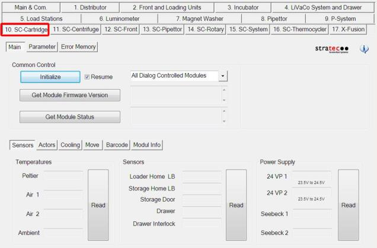
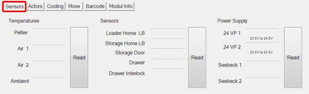
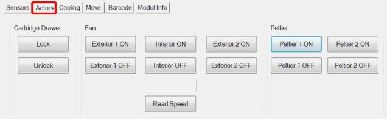
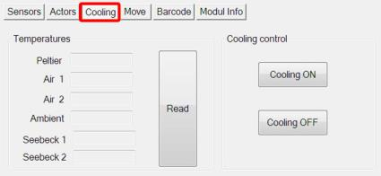
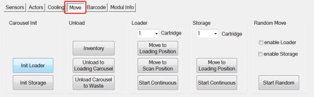
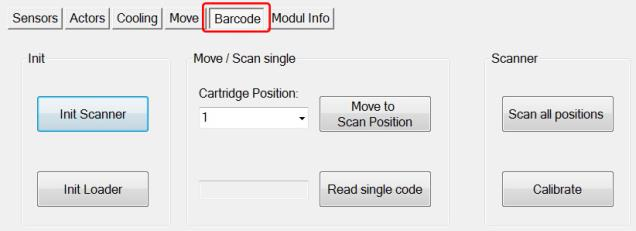
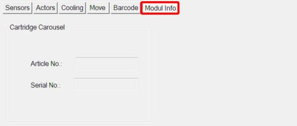
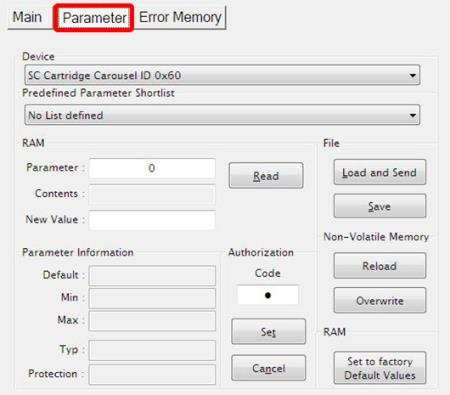

SC-Cartridge Tab
Refer to Common Features for features found on every tab (Common Control, Communication Status, Buttons).
 Main (tab)
Main (tab)

Sensors

- Temperatures - Reads the temperatures at the Peltiers, the two Storage Carousels Upper (Air 1) and Lower (Air 2), and the Ambient temp. The Peltiers and the Storage Carousels normally read slightly less than 15°C.
- Sensors - Displays the current status of listed sensors (LB is light barrier).
- Power Supply - Displays current voltage readings at the listed components.
Actors

- Cartridge Drawer - Manually lock or unlock the Cartridge Drawer (status is indicated by LED light).
- Fan - Manually control the two exterior fans. (These are visible when the front cover is removed.) Also control the interior fan (but not visible.)
- Peltier - Manually control each of the two Peltiers.
Cooling

- Temperatures - Reads the temperatures at the Peltiers, the two Storage Carousels Upper (Air 1) and Lower (Air 2), the Ambient Temp. and the Seebeck components. The Peltiers, Storage Carousels and Seebecks normally read slightly less than 15°C.
- Cooling Control - Manual control of the Cooling System. (Fans, Peltiers, thermistors.)
Move

- Carousel Init - Initialize the Loader or the Storage Carousel.
- Unload
- Inventory Button - Rotary Distributor checks all cartridge storage positions and generates a report listing each cartridge in storage.
- Unload to Loading Carousel - Moves all cartridges in storage to the loader.
- Unload Carousel to Waste - Moves all cartridges to waste.
- Loader - Moves the selected Loader Carousel slot (1-14) to either the Loading Position or Scan Position. The Start Continuous button moves the loader carousel continuously.
- Storage - Moves the selected Storage Carousel slot (1-14) to the Loading Position. The Start Continuous button moves the storage carousel continuously.
- Random Move - Generates continuous random movement of the Loader or Storage carousel.
Barcode

- Init - Initialize the Barcode Scanner or the Loading Carousel.
- Move/Scan - Move the selected cartridge to the Scan position and then Read the barcode.
- Scanner - Scan all positions or calibrate the scanner.
Module Info

- Cartridge Carousel - Displays Carousel information.
Parameter (tab)

- Display any parameter value of the selected Device by entering a Parameter number and clicking the Read button.
Error Memory (tab)
- Lists errors created by module movement.
 button at the top of the page to send feedback, comments, or change requests.
button at the top of the page to send feedback, comments, or change requests.